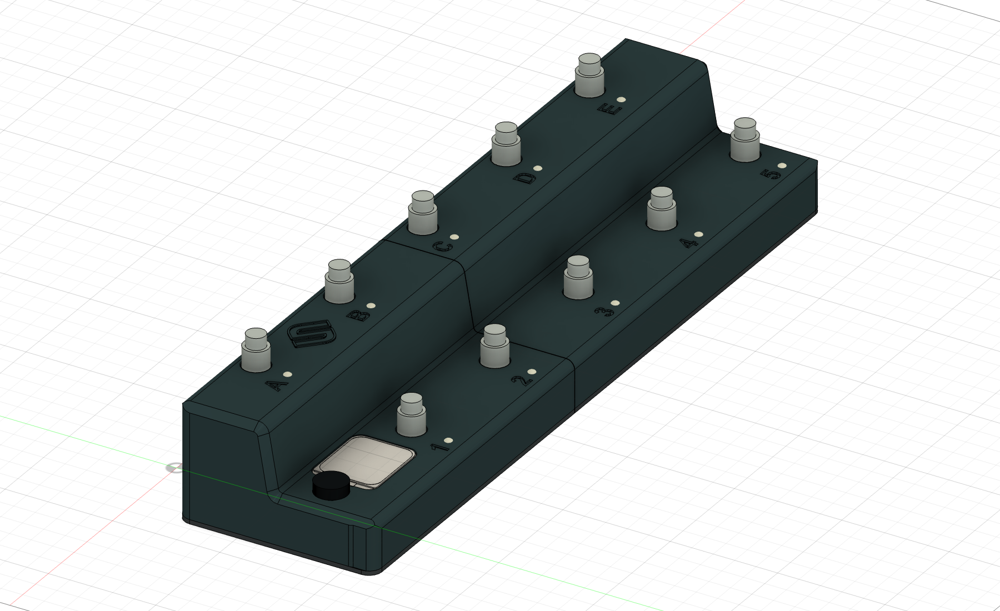

YOUR CONTROLLER. READY TO PLAY.
A fresh start.
A simple update.
Install the latest bundled firmware directly from your browser.
All you need is your controller and a USB-C data cable.
SIGMIDI FOOT CONTROLLER
VERSION __PROJECT_VERSION__
Supported hardware:
DFRobot FireBeetle 2
DFR1075 · ESP32-C6 · 4 MB flash
BUNDLED BUILDChecking firmware…
✓ SHA-256 verifiedChecking the firmware package and your browser…
Open this page in desktop Chrome or Edge to connect over USB.
Open this page using HTTPS or localhost to connect over USB.
Keep “Erase device” unchecked to retain saved settings.
Only compatible SIGMIDI Foot Controller layouts can preserve configuration.